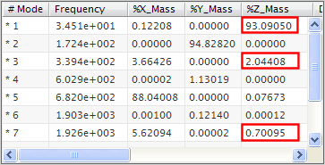

Deactivate irrelevant modes
 Normal Modes [10] (under the RS_Meta_Solution_1 node)
Normal Modes [10] (under the RS_Meta_Solution_1 node)
In the Response Simulation Details View panel, note the mass values of each mode in the Z direction (under the %Z_Mass column).
In this simple scenario, we are interested only in the dynamic response in the Z direction. As a general rule, you should have at least 80% representation of mass in the direction you are evaluating to achieve an accurate analysis. Modes 1, 3, and 7 are the only significant modes in the Z direction (in general, you can consider modes that contribute more than 0.5% to be significant). Together, they represent 95.836% of the mass in the Z direction.

|
Note |
The columns in the picture have been rearranged for clarity. The values that you see in your model may be slightly different. |
To further reduce the modal model, you can remove modes 2, 4, 5, 6, 8, 9, and 10 from the analysis because they do not contribute to the modal mass in the direction of interest.
Modes with an asterisk character (*) in the # Mode column are considered "active" in your response evaluations. By default, all modes are marked as active.
|
Ctrl |
+ |
 Deactivate
Deactivate
The asterisk characters next to the selected modes disappear.
 Save (Quick Access toolbar)
Save (Quick Access toolbar)